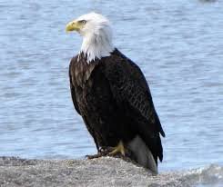

The
bald-eagle
Species
The
bald-eagle
Species
Common Name: Bald Eagle
Scientific Name: Haliaeetus leucocephalus
Type: Birds
>Diet: Carnivore
Average life span in The Wild: Up to 28 years
Size: Body: 34 to 43 inches; wingspan: 6 to 8 feet
Weight: 6.5 to 14 pounds

The bald eagle, with its snowy-feathered (not bald) head and white tail, is the proud national bird
symbol of the United States—yet the bird was nearly wiped out there.
For many decades, bald eagles were
hunted for sport and for the "protection" of fishing grounds. Pesticides like DDT also wreaked havoc on eagles
and other birds.
These chemicals collect in fish, which make up most of the eagle's diet. They weaken the
bird's eggshells and severely limited their ability to reproduce.
Since DDT use was heavily restricted in
1972, eagle numbers have rebounded significantly and have been aided by reintroduction programs.
The result
is a wildlife success story—the U.S. Fish and Wildlife Service has upgraded the birds from endangered to least
concern.
Though their numbers have grown in much of their range, bald eagles remain most abundant in Alaska and
Canada.
These powerful birds of prey use their talons to fish, but they get many of their meals by
scavenging carrion or stealing the kills of other animals.
(Such thievery famously prompted Ben Franklin to
argue against the bird's nomination as the United State's national symbol.)
They live near water and favor
coasts and lakes where fish are plentiful, though they will also snare and eat small mammals.
Bald eagles are believed to mate for life.
A pair constructs an enormous stick nest—one of the
bird-world's biggest—high above the ground and tends to a pair of eggs each year.
Immature eagles are dark,
and until they are about five years old, they lack the distinctive white markings that make their parents so
easy to identify. Young eagles roam great distances.
Florida birds have been spotted in Michigan, and
California eagles have traveled all the way to Alaska.
Read more about the bald eagle on here
https://en.wikipedia.org/wiki/Bald_eagle